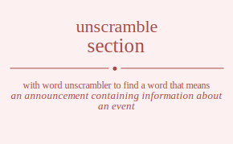

The word found after unscrambling section means that an announcement containing information about an event, the act of noticing or paying attention, a request for payment, advance notification (usually written) of the intention to withdraw from an arrangement of contract, a sign posted in a public place as an advertisement, polite or favorable attention, a short critical review, discover or determine the existence, presence, or fact of, notice or perceive, make or write a comment on, express recognition of the presence or existence of, or acquaintance with, .
